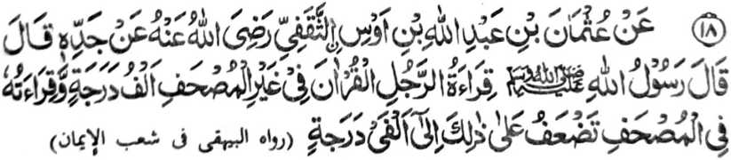

Miyakathitayan ko ‘Uthman bin Abdullah bin Aus Ath-Thaqfi a piyanotholon o ama iyan a datu a pitharo iyan a pitharo o Rasulollah (Sallallaho ‘Alaihi wa Sallam), “So kapembatiya-a o mama ko Qur’an a pho-on sa langag iyan na sanggibo a daradat a pangkatan niyan. So kapembatiya iyan sa Qur’an a phagilay niyan so kitab na pekhatakep iyan so daradat iyan taman sa dowa nggibo pangkat.”
Madakel a kalbihan o kababaloy o tao a Hafiz a miya-aloy den. Ogaid na sangka-iya Hadith a piyakataralebi niyan so kapephangadi-i ko kitab a Qur’an a di so kapembatiya-aon a pho-on ko kilalangagen non, sabap sa so kapangadi na kena ba giyabo a kapephakabegay niyan sa madalem a sabot ago kapamimikiran ka aden pen a madadalemon a manga ped a simba, lagido kalbihan o kaphagilaya ko Qur’an ago so kapekhakapeti ron go so manga ped iyan.
So kiyapaka-mbidabida o marayag a ma-ana o manga Hadith na aya mini-onga niyan na so kiyapakadakel o mbida-bida-an a panarima o manga Ulama sa Hadith o so kapangadi-i ko kitab a Qur’an na ba taralebi ko kabatiya-aon pho-on sa langag.
So Imam Nawawi (Rahmatullahi ‘Alaihi) na tiyangked iyan a so kapakapelebiya angkanan a dowa a okit na si-i matatago ko tao. Aden a manga tao a mapiya a kapekhatekhes o ni-at iran ago kapephaka-pamimikiran iran igira aya iran pephangadi-an so kitab a Qur’an, na aden mambo a manga tao a aya kapiya a kapekhatekhes o ni-at iran ago kapephaka-pamimikiran iran na igira pembatiya siran pho-on sa langag. Giyoto-i sabap a so kapephangadi-i ko kitab na tomo-on o saba-ad, na so mambo so kapembatiya pho-on sa langag a tomo-on mambo so saba-ad. So Hafiz (Rahmatullahi ‘Alaihi) na miyaka-ayon mambo o sangka-iya osayan [a misorat iyan] ko kitab iyan a Fath-ul-Bari.